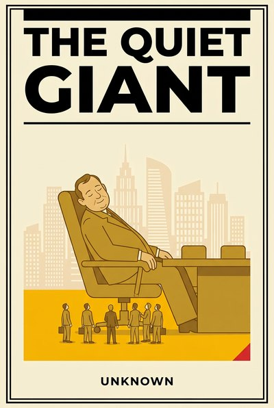

Library › Leadership
The Quiet Giant — Summary & Key Lessons

How big organizations die politely: committees, candor decay, sunk empires and the slow fall nobody panics about.
📖 OPEN THE FULL INTERACTIVE BREAKDOWN →🌐 Read it in Hindi, Hinglish, Gujarati, Tamil & 22 more languages — free, with audio.
💡 The Big Idea
Companies rarely die of explosions; they die of politeness. Decline in large organizations is slow, comfortable and extraordinarily quiet: committees stretch decisions, information decays on the way up, legacy businesses defend their budgets with yesterday's data, and the best people leave first because they can. No single decision is wrong enough to fire anyone, and the sum of them is a fall that takes a decade and shocks only the outsiders. This book dissects the quiet giant's anatomy, using real public history from the smartphone wars and beyond, and pairs every symptom with a counter-move a leader can actually install: truth rituals, skip-level channels, skeptic assignments, rebel shelters and the discipline of killing your own comfort before the market volunteers to do it. It is a book for anyone inside something big, or building the thing that will be.
🧠 The 11 Key Lessons
Lesson 1: Nobody Panics in a Slow Fall
Chapter 1: The Comfortable Slope
Fast crises trigger instincts, budgets and heroes; slow decline triggers nothing, because every quarterly comparison is survivable and every slide is explainable. The danger of the gentle slope is that it never produces the emergency that would justify change, and so the change never comes until the slope ends. Giants need a way to panic early, on purpose, about quiet numbers.
📖 Example: The smartphone wars' losers spent years posting profitable quarters while their share of the future halved annually, and the linked case study's famous epitaph ('we didn't do anything wrong') is the sound of a slope that never felt like a cliff. Read the full example →
⚡ Do this: Pick the one leading indicator that predicts your future (share of new demand, cohort adoption, pipeline of the next category) and put it first on every agenda, with a pre-agreed panic threshold.
Lesson 2: Committees Are Where Urgency Sleeps
Chapter 2: Decision Latency
Big organizations convert decisions into meetings, meetings into minutes and minutes into more meetings, and urgency dies in the interval. The poison is not deliberation, which matters; it is latency without a clock, where every stakeholder can add a week and nobody owns the cost of waiting. Speed is a designed property, not a personality trait of the CEO.
📖 Example: Every disruption post-mortem finds the fatal feature was known internally years early, and was 'in committee' when the market moved; the challenger's actual product advantage is usually just their calendar. Read the full example →
⚡ Do this: Time-stamp one important decision's journey from proposal to approval. Publish the days taken. Then give the next three decisions a named owner, a deadline and a default if the deadline passes.
Lesson 3: The Sunk Empire Defends Itself
Chapter 3: Legacy Veto
Within every giant sits an older, bigger business that funds everything and fears everything, and it will use its margins, its customer base and its political gravity to slow whatever might cannibalize it. This is rational at the unit level and suicidal at the firm level, and the only counterweight is structural: someone senior, funded and fireproof, whose job is to argue for the new thing against the empire.
📖 Example: Incumbents in cameras, phones, taxis, media and software each watched their legacy unit veto the future in slow motion, while the rare exceptions (the ones that self-cannibalized early) are studied precisely because they are so rare. Read the full example →
⚡ Do this: Appoint one senior skeptic whose explicit, rewarded job is to argue the challenger case against your most profitable business, with data, every quarter, in writing.
Lesson 4: Politeness Kills Candor
Chapter 4: The Manners Tax
Mature cultures accumulate manners: bad news arrives softened, doubts arrive as questions, and disagreement arrives only after the meeting, in corridors. Nobody lies; everyone filters. The tax is paid in delayed truth, and by the time the truth is undeniable it is expensive. Candor has to be installed as ritual, with protection attached, or it decays by default.
📖 Example: The giants that fell kept publishing values of openness while shooting messengers procedurally, not personally, and the turnarounds that worked almost always began with one leader publicly thanking the bearer of unbearable news. Read the full example →
⚡ Do this: Install one truth ritual this month: a standing session where the worst news goes first, the leader speaks last, and the bringer of the hardest message is thanked in public, on the record.
Lesson 5: Middle Management Is the Message Filter
Chapter 5: Information Decay
Every layer a report passes through sands off a little discomfort: risks become caveats, customer anger becomes feedback, and by the time news reaches the top it has been moisturized into harmlessness. The filter is honest work done kindly, which is what makes it lethal. Leaders must deliberately drill through their own organization to taste the raw feed.
📖 Example: Field-reality stories from manufacturing, retail and software giants rhyme: the chairman learns of the defect from a journalist, the CEO meets the real customer on a fake shopping day, and everyone below knew for a year. Read the full example →
⚡ Do this: Book one unscripted skip-level conversation per week: no managers in the room, two questions (what is broken, what do you not tell me), notes taken, one fix shipped within 48 hours and credited by name.
Lesson 6: Reorgs Are Theater Without Rhythm
Chapter 6: The Restructuring Habit
Giants reorganize the way tired institutions pray: periodically, loudly, in place of action. Boxes move, titles change, and the actual process that produced the failure ships intact to its new desk. A reorg is justified only when it changes who decides what, and dangerous precisely when it is used as a substitute for deciding anything.
📖 Example: The multi-reorg decades of banking, media and telecom giants produced nameplates, not results, while the turnaround stories that worked changed decision rights and left the chart to follow, a year late and permanently. Read the full example →
⚡ Do this: Ban one planned reorg this year. Replace it with one decision-rights fix: name the single owner of the decision that keeps stalling, and let the org chart catch up later.
Lesson 7: The Stars Leave First
Chapter 7: The Talent Canary
Decline's earliest accurate signal is not financial; it is who is updating their profile. The most employable people feel the drift first, have the most options, and leave with the least drama, and each departure removes exactly the candor and competence the decline needed. Watching who leaves, and asking twice, is the cheapest early-warning system a giant can run.
📖 Example: Every late-stage giant's story includes the quiet exodus of its best product minds to challengers, and the exit interviews that named the truth were filed, unread, in the HR system that outlived the strategy. Read the full example →
⚡ Do this: Run your exit interviews twice: the standard one, and a second one six months later by someone the leaver never worked for. Compare notes quarterly with the promotion list.
Lesson 8: Efficiency Is Not a Strategy
Chapter 8: The Cost-Cutting Identity
Cost discipline is a virtue that becomes an identity, and an identity becomes a destiny: once the organization's pride lives in the margin report, every growth bet looks like risk and every cut looks like winning. Giants do not usually collapse from spending too much; they collapse from spending all their courage on efficiency and none on the next thing.
📖 Example: The archive of 'disciplined' giants that shrank profitably for a decade and then mattered not at all is long, and their boards routinely graded the shrinking as execution excellence, right up to the last flat decade. Read the full example →
⚡ Do this: Institute the pairing rule: every cost-reduction program must ship alongside a named growth bet of equal internal attention. Grade both in the same meeting.
Lesson 9: Partnerships Age Like Milk
Chapter 9: The Complacent Vendor
The supplier relationship that worked for a decade is the one nobody prices anymore, and quietly it stops being market-standard while remaining board-approved. Giants carry aging partnerships the way ships carry barnacles: each one small, the sum drag real. Renewal must be earned periodically, tendered or re-negotiated, or incumbency collects rent on your architecture.
📖 Example: Outsourced-era giants discovered their crown-jewel processes were running on decade-old vendor terms and unverifiable quality, and the re-tender shocks of every cost-audit decade rhyme on this exact note. Read the full example →
⚡ Do this: Re-tender or renegotiate one partnership older than three years this quarter. Not to switch, to re-price the truth. Keep the incumbent if they win; that is the point.
Lesson 10: Culture Outlives Strategy Documents
Chapter 10: What Gets Rewarded
Strategy decks describe the company the leadership wishes it ran; the promotion list describes the one it actually runs. Culture is the sum of what is rewarded, tolerated and punished, and it will eat any strategy that contradicts it. Changing course therefore means changing the reward ledger first, visibly, in the language of promotions and bonuses rather than posters.
📖 Example: Every failed transformation of a giant featured beautiful decks and unchanged bonus criteria, and the successful ones were almost embarrassingly mechanical: the people who built the future got promoted in public, and the behavior followed the promotion. Read the full example →
⚡ Do this: Audit your last ten promotions against your stated strategy. If the list contradicts the deck, the list is right. Change the promotion criteria in writing before the next cycle.
Lesson 11: Renewal Needs a Room Outside the Building
Chapter 11: The Rebel Shelter
New things cannot incubate inside the incentives of the old thing; they need a sheltered room, a different scoreboard, and protection from the immune system until they are strong enough to survive contact. The shelter must be real (separate metrics, patient money, senior sponsorship) or it is a press release, and the immune system knows the difference immediately.
📖 Example: The skunkworks successes across aviation, computing and retail share the same blueprint, and the failed 'innovation labs' of recent decades share the opposite one: same building, same metrics, same manager, new furniture. Read the full example →
⚡ Do this: If renewal matters to you, shelter one rebel team this quarter: a different scoreboard, a named sponsor with power, a quarterly review the legacy business does not control. Protect it in writing for four quarters.
✅ 5-Step Action Plan
- Put one leading indicator first on every agenda with a pre-agreed panic threshold.
- Run weekly skip-levels; ship one fix in 48 hours and credit the name.
- Appoint a funded senior skeptic to argue the challenger case quarterly.
- Audit the last ten promotions against the strategy; change criteria in writing.
- Shelter one rebel team with its own scoreboard and protect it for four quarters.
⚠️ When This Doesn't Work
This is a TheSmallBook Original, published under the name Unknown. The decline patterns draw on real, public corporate histories (the smartphone transition, media and banking restructurings, documented turnarounds), generalized with care: giants are full of good people doing rational things, and this book accuses processes, never persons. Specific figures are deliberately avoided; the patterns are the point.
💀 The Graveyard Proves It
📞 Nokia — 'We Didn't Do Anything Wrong, But We Lost'. Burn: 50% market share → sold off. Read the full case study →
💬 Best Quotes from The Quiet Giant
- “Nobody panics in a slow fall. That is what makes it slow.”
- “What gets rewarded, not what gets framed, is the culture.”
- “Renewal needs a room outside the building.”
Interactive version: mark lessons as read, listen in your language, share quote cards.